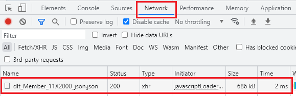
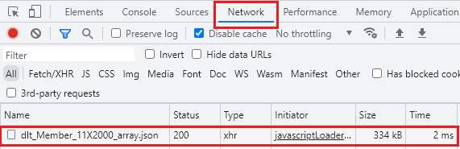
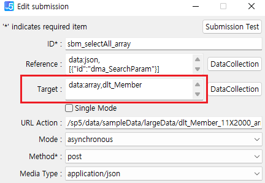

Submission 설정 중 target 설정에 대한 예시로 기본 데이터 포맷(JSON)과 대용량 데이터 포맷으로 주로 쓰이는 Array 설정에 대한 예시입니다.
이 예제는 타입별 조회 버튼을 클릭하여 응답 데이터의 크기와 응답 데이터의 그리드 출력 속도를 비교하기 위해 작성되었습니다.
JSON 타입의 응답 데이터 조회
ARRAY 타입의 응답 데이터 조회
사용자 목록이 조회됩니다.
아래는 Chrome 브라우저의 개발자도구 - Network 참고 이미지입니다.

사용자 목록이 조회됩니다.
아래는 Chrome 브라우저의 개발자도구 - Network 참고 이미지입니다.

데이터 타입별 포맷 예시 : https://example.inswave.kr/link.html?p=P00052
Submission의 target 속성을 아래와 같이 설정합니다.
data:json,dlt_Member그림 1.Submission 설정 예시 이미지
아래는 응답 데이터 예시입니다. 예제 파일을 기준으로 몇몇 컬럼은 제거하고 1개의 행의 데이터만 추출하여 작성되었습니다.
{
"dlt_Member" : [
{"EMP_CD":10000000,"EMP_NM":"신길동","GENDER_CD":"M","JOIN_DATE":"20040922","POSITION_CD":"04","DUTY_CD":"05","ROLE_CD":"02"}
]
}Submission의 target 속성을 아래와 같이 설정합니다.
data:array,dlt_Member그림 2.Submission 설정 예시 이미지

아래는 응답 데이터 예시입니다. 예제 파일을 기준으로 몇몇 컬럼은 제거하고 1개의 행의 데이터만 추출하여 작성되었습니다.
{
"dlt_Member" : {
"data" : [10000000,"신길동","M","20040922","04","05","02"],
"columnInfo" : ["EMP_CD","EMP_NM","GENDER_CD","JOIN_DATE","POSITION_CD","DUTY_CD","ROLE_CD"]
}
}